|
E1M2: Castle of the Damned
text by Apollyon
graphics by Jjonez
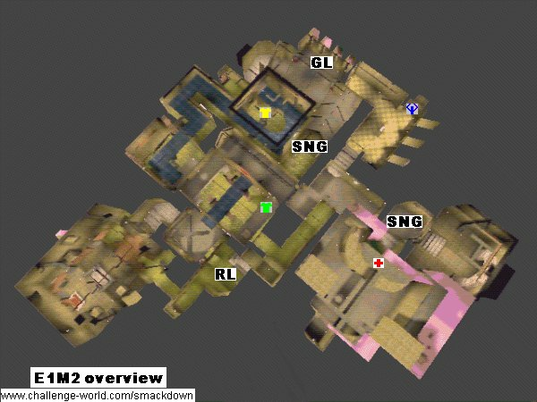
Introduction
E1M2, Castle of the Damned is both a classic teamplay and duel map. A lot of important matches took place here, like the one in which Tresh won his Ferrari in the Red Annihilation tournament or the famous games between DeathRow and Clan Nine. As a teamplay map it has always been the map of the top clans who are able to score bigtime here against weaker teams and as soon as two equally skilled teams meet here you can be sure to see and exciting match. E1M2 favours teamplay and good communication over personal skill and this is probably the reason for its huge popularity.
Items available
Weapons:
- 1 rocket launcher
- 1 grenade launcher
- 2 super nailgun
- 1 super shotgun
- 1 nailgun
Armor:
- 1 yellow armor
- 1 green armor
Powerups:
Important areas
The most important area on E1M2 is the area spanning the Yellow armor area, over the Grenade launcher room to the Quad area. Most of the action during a match takes place there and strategy evolves around controlling both Yellow armor and Quad. Contrary to any other map, the room where the Rocket launcher is located is of minor significance. An area that should not be neglected is the Megahealth area near the single player level exit. Attacks are often launched from there. Then there is also the bridge leading to the Yellow armor area which has some nail traps in the walls that are very noisy and, at times, deadly. Finally there is the start area with a submerged entrance to the Rocket launcher room and the central bridge area connecting several several sections of the map.
Yellow armor area
|
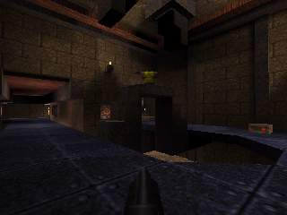
|
The Yellow armor resides on a tiny bridge over a shallow pool of dirty water.
A 'U' shaped walkway leads on one side to the Grenade launcher area and on the other side, through the nail traps, to the central bridge. The water contains a teleporter to the central bridge area.
|
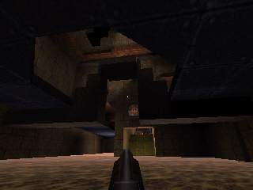
|
Grenade launcher room
|
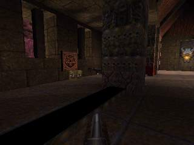
|
The Grenade launcher lies behind a column in a rather large room with a tall roof, lots of healthpacks and some nail ammo.
A passage leads down some steps into the Yellow armor area. At the opposite side, an opened door gives out into the Quad area.
At the start of the match, part of the room is locked by walls that can be lowered by walking through the Yellow armor passage. Next to the grenade launcher is a switch. Activating it extends a narrow bridge to a small niche with a box of rockets. Below this bridge is a Super nailgun and jumping down to that will lower yet another wall, reavealing a passage leading right under the Yellow armor.
|
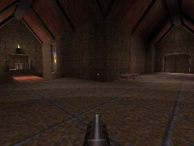
|
Quad area and crossroads
|
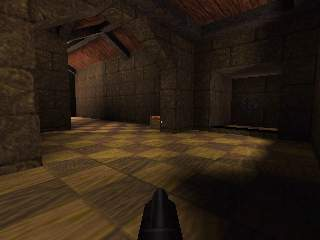
|
The Quad lies in a small niche of a smallish room that is connected both to the Grenade launcher area and to the crossroad area which connects the Megahealth room, the exit of the Rocket launcher room and the central bridges area.
At the start the Quads niche is closed and needs to be opened by pressing the nearby switch, attached to the pillar in the middle of the room.
|
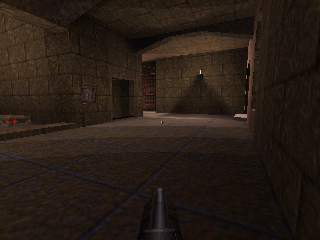
|
Megahealth room
|
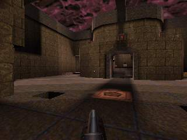
|
The Megahealth sits on a high ledge in a large room with only a small entrance. At the bottom, in the corners of the room, there are teleporters which will take you up onto that ledge. Nearby the megahealth you can also find some health and ammo. A passage right below the Megahealth leads into the exit area (which cannot be used in multiplayer games). The exit area also contains a Super nailgun, one of the few good weapons on the map.
|
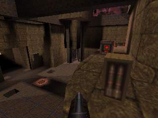
|
Central bridge area
|
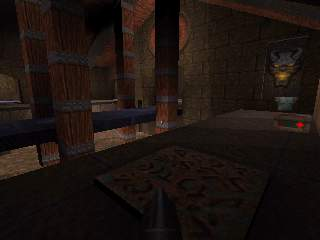
|
Actually, three bridges run parallel to each other here. The central one extends from the exit of the Nailgun room. The teleport in the Yellow armor area ens on a side bridge which also holds a Green armor. The third bridge has a Super shotgun and connects to the Yellow armor area through the nail trap. A sliding door gives access to the crossroads.
The water below the bridges offers additional interconnectivity. Below the bridge with the Super shotgun, a small stream flows from the Yellow armor area. Another water filled room leads to the Rocket launcher. Last but not least, an elevator can be used to get out of the water onto the bridges.
|
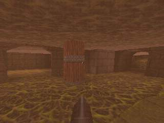
|
Nailgun room
|
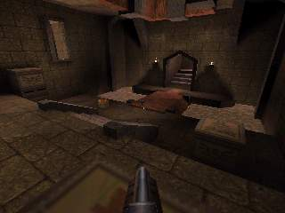
|
This room, which is the single player start area, contains a (fairly useless) Nailgun. An underwater exit leads to the Rocket launcher while the central bridge area can be reached without taking a dip.
|
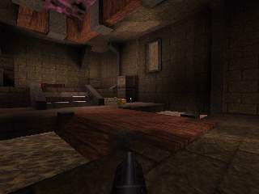
|
Rocket Launcher room
|
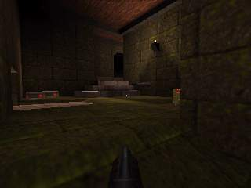
|
The Rocket launcher lies in a very small and tight room which has two entrances and three exits. Both entrances come from the water and since you cannot see through the murky water, attacks from there are almost always surprising. The third exit leads also into water that can be exited towards the crossroads.
|
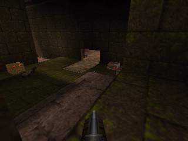
|
Popular shortcuts
Unlike the other maps, E1M2 offers only a few shortcuts. The few there are are easy to perform as well. Obviously jumping over bridges like at the Yellow armor area is easy. The only other shortcut that is at least hard to find and involves some minimum strafe jumping skill is the jump to the Super nailgun below the Grenade launcher area. Usually you can only access it by jumping down from the Greanade launcher area and getting onto the ledge from the water seems to be impossible. But the threshold of the passage out of there is slightly higher than the rest of the ground. From there you can easily jump to the Super nailgun ledge. Bunnyhopping plays a mayor part nowadays on this map because it is important to get from one area to the other in a short time.
Basic strategies
The strategy in E1M2 is to control the Yellow armor, Grenade launcher and Quad areas. Unlike many other maps the rocketlauncher is not camped. The reason is that defending the small room for a longer time is almost impossible since there is very little armor on the map and you easily frag yourself when shooting rockets in the tight quarters of the Rocket launcher, especially when it gets crowded by enemies.
Since there are only two armors (of which the Green one is quite weak), weapons other then the Rocket launcher become more important. In this case its the Super nailguns. A Super nailgun protected by a Yellow armor can easily defend against attacks, even with Rocket launchers.
Controling the important area requires good strategy and communication because positions are often switched. Usually one player waits until the Yellow armor spawns, takes it and then moves on to the Quad area. Enemies will often 'bring' you the rocketlaunchers. Sometimes enemies that snatched a Rocket launcher retreat to the Megahealth room an try to stock up on ammo and health before they go on to attack the Quad area. Since there is only a small entrance to that Megahealth area, its rather easy to defend so you can sit there until your teammates all have Super nailguns. The classic Quadrun on E1M2 takes care of that situation by cleaning the Megahealth room.
Attacks on the important area are either sneaky or involve flooding. There are only two ways to enter the Yellow armor/Quad area (besides spawning). Sometimes players with a Rocket launcher will try to attack the Yellow armor area from below, from within the water. Once in a while they manage to get there unnoticed and might rocketjump right onto the Yellow armor or in the face of the guy camping there. Often areas are 'flooded' by attackers just with their shotguns. Since there is not much armor around this is a quite successful tactic.
Tours
From the Nailgun to the Rocket launcher and further to the Yellow armor
From the Yellow Armor to the Megahealth passing the Green armor
From the Megahealth to the Quad and the Grenade launcher and back to the Yellow armor
|